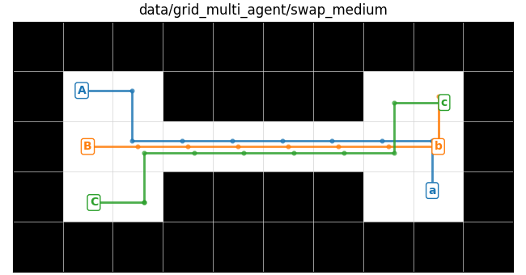
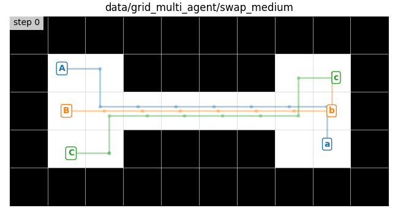
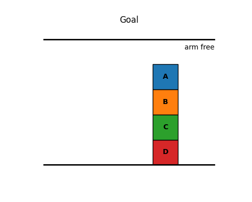
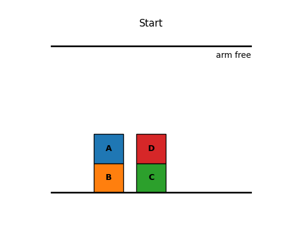
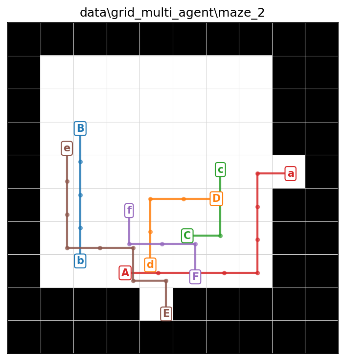

In this assignment you will be implementing a coupled state space for multi agent path finding (MAPF) and a boolean predicate state space for task planning (TP) in a block world. You will then implement the approach of your choosing for fast MAPF on hard instances. You will be solving search problems in these spaces using the same best_first_search implementation you used for MP1.
To get started on this assignment look inside the template/ directory. The template contains the following files and directories:
search.py. You will edit and submit this - you
should copy over your code from MP1’s search.py
state.py. You will edit and submit this - you should
copy over your code from MP1’s AbstractState class (namely
the implementation of the __lt__(self, other)
function)
mapf.py. You will edit and submit this - your
MultiAgentGridState class goes here
hard_mapf.py. You will edit and submit this - your
fast solver for hard MAPF instances goes here
task_planning.py. You will edit and submit this -
your BlockWorld actions and
BooleanPredicatesState class go here
main.py. Main entry point for this assignment, you
will be running this main file to test your code
maze.py. Some utilities we provide for working with
Mazes, unchanged from MP1, except for visualization
tp_vis.py. Some utilities we provide for visualizing
the task planning block world state space
requirements.txt. You can install the required
packages with pip install -r requirements.txt, unchanged
from MP1
data/grid_multi_agent. Text files containing example
problems for multi agent grid state
data/block_world. JSON files containing example
problems for block world
Please ONLY submit search.py, state.py,
mapf.py, hard_mapf.py, and
task_planning.py.
For each of the remaining parts of the assignment you will find TODOs
in one of these five files where you need to write your own code. For
example, for part III you will find TODOs marked
# TODO(III). We’ve provided many comments and instructions
in the code under those TODOs.
Please be aware: our visualization code is not bulletproof. It does not check for correct types and return values, this is your responsibility. If your methods return the wrong types, such as failing to find a path when one exists, then the visualization may throw unexpected errors. In general if you are getting errors from our visualization code you should probably first do some debugging with print statements…
There is 1 TODO(III) in each of search.py,
state.py, and mapf.py.
You need to copy over your best_first_search,
backtrack, manhattan, and __lt__
(in AbstractState) methods from MP1. If you did not finish
these when doing MP1 you should go back and make sure you pass all the
initial tests for MP1 which examined these functions (you should pass
all tests related to “TODO(III)”’s in MP1), though we do provide some
zero-point tests for this part on Gradescope.


We now implement a grid state class to include multiple agents, each
of which has a single goal. A MultiAgentGridState.state is
a tuple of agent locations, for example ((1, 3), (4, 5))
for two agents. The matching goal is also a tuple, where
goal[i] is the destination for state[i]. The
order of agents must stay fixed throughout the search. The set of
neighbors of a state are the set of all possible joint actions that can
be taken by the agents. Notice that now, by default, the maze also
allows waiting in place, meaning an agent may choose to remain in its
current cell for one time step. The cost of one joint action is \(1\), no matter how many agents move or wait
in place, and therefore the path length measures the number of time
steps until all agents have reached their goals - the makespan.
In get_neighbors you must reject two kinds of
inter-agent collision:
For example, the following scenario is an invalid edge-swap
collision: agent 0 moves from cell x=(i, j) to
y=(k, l) while agent 1 moves from cell
y=(k, l) to x=(i, j). In other words,
self.state[0] = x, self.state[1] = y, new_state[0] = y, new_state[1] = x.
Besides get_neighbors, there are 3 more
TODO(IV) for you to complete in mapf.py:
is_goal and two heuristic functions. is_goal
should return True when all agents are at their goals. The two heuristic
functions are the max and sum of the Manhattan distances from each agent
to its goal. The max heuristic is admissible, while the sum heuristic is
inadmissible. You may also implement your own better heuristics if you
wish to experiment but notice that the autograder compares both path
quality and number of explored states for the coupled MAPF cases.
Run best_first_search on a coupled MAPF problem:
python3 main.py --problem_type=GridMultiAgent --use_heuristic --maze_file=data/grid_multi_agent/swap_smallYou can replace data/grid_multi_agent/swap_small with
another maze file in data/grid_multi_agent. The
--heuristic_type flag can be set to admissible
or inadmissible; it defaults to admissible for
grid problems. If you’d like to see the effect of disallowing waiting
you can add the --disallow_waiting flag, whose default
value is False. If you would like to also visualize the resulting
solution with matplotlib add the --show_maze_vis flag, or
save the static visualization with
--save_maze=some_file.png. To animate the solution, add
--animate_maze. Notice some of the mazes we’ve provided are
too hard for coupled MAPF - we will deal with those in part VII of this
assignment.


We now implement a task planning state space for stacking blocks. The state should consist of a set of facts about the world, and actions require certain facts as preconditions and have some effect on the set of facts. Both facts and actions will be represented as functions which take as input zero or more objects (in our case the only object type is “block”).
We are going to separate our code into two classes, a
World class, which captures the predicates, actions, and
objects that together make up our state space, and a
BooleanPredicatesState class, which captures the current
set of true facts about the world. Think of the World like
the Maze from the MAPF problems and
BooleanPredicatesState as the GridState. We’ve
provided you most of the code related to defining the World
and specifically the BlockWorld classes. You just need to
fill in the 4 TODO(V) in task_planning.py for
the 4 actions in this space.
Each action is a static function that returns
(preconditions, postconditions).
preconditions is a set of facts that must already be
true to take the actionpostconditions is a dictionary with two keys:
"delete" maps to facts that become false after the
action"add" maps to facts that become true after the
actionAll preconditions and postconditions should be built from the
predicate helpers already defined in BlockWorld, such as
BlockWorld.holding(block) or
BlockWorld.block_on_block(blockA, blockB). For example, a
precondition for place(block) is
BlockWorld.holding(block).
We now move on to BooleanPredicatesState. There are 5
TODO(VI) in task_planning.py.
The first is take_action(preconditions, postconditions)
which should be called with the preconditions and postconditions for a
specific action. This function will be used to compute the set of facts
that result from applying the action to the current state. It
should:
None if the action’s preconditions are not all
contained in self.state,postconditions["add"],postconditions["delete"] unless
self.delete_relaxation is True,self.state in placeThe next TODO is get_neighbors. To generate neighbors,
loop over every action in self.world.actions, ground that
action with every possible tuple of object inputs, call
take_action, and create a neighboring
BooleanPredicatesState whenever the action is valid. The
object types for each action are stored in
self.world.action_inputs, and the available objects of each
type are stored in self.world.objects_by_type. Similar to
iterating over all possible combinations of agent actions in the Coupled
MAPF part, to implement this grounding step you may find
itertools.product useful.
For the final TODOs, implement is_goal to return True
when all goal facts are present in self.state. The goal is
a subset condition, not an exact match. Then implement the two
heuristics:
compute_num_unsatisfied_goals_heuristic: return the
number of goal facts not currently present in
self.statecompute_delete_relaxation_heuristic: solve the relaxed
problem from the current state, where delete postconditions are ignored,
and return the length of that relaxed planFor the delete-relaxation heuristic, you can create a new
BooleanPredicatesState with the same facts and goal but
with delete_relaxation=True, then run
best_first_search on that relaxed state. Notice how we do
search in order to compute this heuristic but it is for
an easier version of the problem.
To run best_first_search on the provided BlockWorld problem:
python3 main.py --problem_type=BlockWorld --block_file=data/block_world/block_world_1.jsonYou can replace data/block_world/block_world_1.json with
any other BlockWorld JSON file you create. Note that we have not
provided you with many test cases in data/block_world/, you
may want to write your own. Make sure to follow the same template. When
running main, add --use_heuristic to use the heuristic
selected by --heuristic_type. The
--heuristic_type flag can be set to
num_unsatisfied_goals or delete_relaxation; it
defaults to num_unsatisfied_goals for BlockWorld. The
--spf=1.0 flag sets the seconds per frame for the
visualization of the final path to \(1.0\) seconds per frame. If you set
--spf=0 or any negative number you will not see the
visualization of the final path.
Note that some of our tests look at the number of states you explore
during search. If you’d like to debug this quantity you can look at
maze.num_states_validated or you can also print out
len(visited_states) from your
best_first_search implementation to see a related but
slightly different quantity (make sure to remove such print statements
before submitting). You should expect fewer explored states for better
heuristics…
We wrap up this assignment by going back to MAPF. There are some
problems in data/grid_multi_agent that are too difficult
for coupled MAPF to solve, namely they will take a very long time. In
hard_mapf.py you will find a single TODO(VII)
to implement the solve_hard_mapf_instance method in the
manner of your choosing. To get full credit you need to solve all 5 hard
instances (mazes 2 through 6) in less than 20 seconds each on
Gradescope.
Again, your implementation (whether CBS or PBS or Prioritized Search
or something else, whether using your implementation of
best_first_search or not, etc.) is your choice. You will be
graded on the speed and correctness of your solution but not
the path length or optimality.
solve_hard_mapf_instance(starts, goals, maze) should
return a list of paths, one path per agent:
[
[(r0, c0), (r1, c1), ...], # path for agent 0
[(r0, c0), (r1, c1), ...], # path for agent 1
...
]The number of returned paths must equal len(starts). For
each agent i, paths[i][0] must equal
starts[i], and paths[i][-1] must equal
goals[i]. Paths may have different lengths; after an agent
reaches its goal, the autograder treats that agent as waiting at its
final cell but that doesn’t mean this agent disappears! One common bug
is ignoring an agent after it reaches its goal. The full set of paths
must avoid walls, invalid moves, vertex collisions, and edge-swap
collisions. These edge-swap collisions are often difficult to see in
either a static image or a fast moving animation; we highly recommend
writing your own tester to check for such collisions in a returned
path.

Run your hard MAPF solver on one of the hard mazes:
python3 main.py --problem_type=GridHard --maze_file=data/grid_multi_agent/maze_2You can replace data/grid_multi_agent/maze_2 with any
maze file in data/grid_multi_agent. Notice that parameters
like --heuristic_type and --use_heuristic are
not used for GridHard; your
solve_hard_mapf_instance function decides how to solve the
problem.
Submit the main part of this assignment by uploading
search.py, state.py, mapf.py,
hard_mapf.py, and task_planning.py to
Gradescope. Do not forget to access Gradescope from the Launch App
button in Coursera so that your grade is automatically sync’d.
Before submitting, make sure to comment out any print statements you added for debugging, since extra output can slow down your code on the autograder.
You are expected to be familiar with the general policies on the course syllabus (e.g. academic integrity). In particular, notice that this is an individual assignment and that you may not use external sources to write significant parts of your code for you.